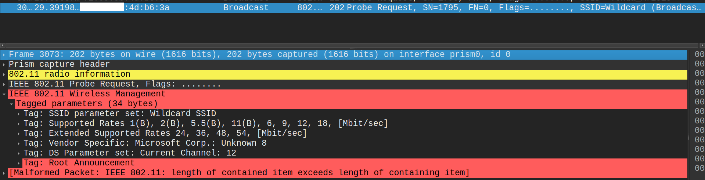
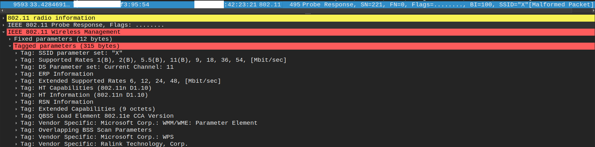
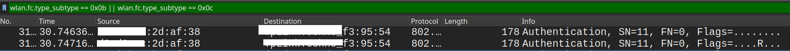
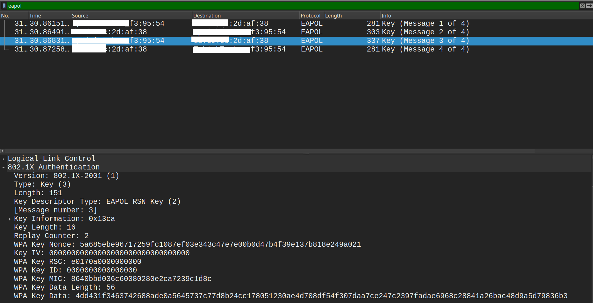

بواسطة : ايهاب ثائر
لو سألت نفسك: "كيف جهازي يعرف الشبكات القريبة ويتصل بها؟" الموضوع في الحقيقة سلسلة خطوات منظمة، تبدأ بالتعارف وتنتهي بالتشفير الكامل للبيانات.
أول ما تفتح الواي فاي على جهازك، يصير حوار بسيط بينه وبين الشبكات المحيطة:


هذه المرحلة مثل مصافحة البداية(محاولة الاتصال بالشبكة):

بعد المصافحة او الموافقة، الجهاز يقدم نفسه بشكل أوضح:
للآن، لا يوجد إنترنت ولا تشفير… لأن المفاتيح السرية لم يتم تبادلها بعد.
هنا تبدأ الخطوة الأهم: تأكيد أن الجهاز والراوتر يعرفان كلمة السر، وإنشاء مفاتيح التشفير
تتم المصافحة بأربع رسائل:
بعد هذه الخطوة، كل البيانات بينك وبين الراوتر تصبح مشفرّة، وأي شخص يحاول التجسس سيرى مجرد بيانات غير مفهومة.

كل رسالة تُرسل عبر الـ Wi-Fi لها جزئين:
بعض الرسائل فيها الاثنين، وبعض الرسائل الصغيرة مثل ACK يكون فيها الـ Header فقط.
بعد التشفير، تبدأ البيانات الحقيقية (تصفح، فيديو، محادثات) بالمرور داخل الـ Payload بشكل مشفر.
إذا كان كرت الـ Wi-Fi لديك يدعم Monitor Mode، يمكنك مشاهدة هذه العملية.
wlan.fc.type_subtype == 0x04 → Probe Requestwlan.fc.type_subtype == 0x05 → Probe Responsewlan.fc.type_subtype == 0x0b → Authenticationwlan.fc.type_subtype == 0x00 or 0x01 → Associationeapol → Handshake (WPA/WPA2)للاطلاع لتفاصيل اكثر:
If you’ve ever wondered how your device detects nearby networks and connects, the process is actually a series of structured steps, starting with discovery and ending with full data encryption.
If your Wi-Fi card supports Monitor Mode, you can watch this process in action.
wlan.fc.type_subtype == 0x04 → Probe Requestwlan.fc.type_subtype == 0x05 → Probe Responsewlan.fc.type_subtype == 0x0b → Authenticationwlan.fc.type_subtype == 0x00 or 0x01 → Associationeapol → Handshake (WPA/WPA2)